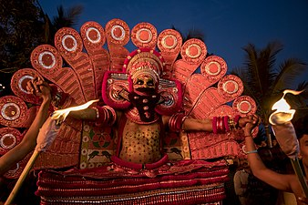

Theyyam
Theyyam (Teyyam, Theyam or Theyyattam) is a popular ritual form of dance worship in Kerala and Karnataka. Theyyam consists of thousand-year-old traditions, rituals and customs. The people of these districts consider Theyyam itself as a channel to a god and they thus seek blessings from Theyyam.There are about 456 types of Theyyam. Theyyam is performed by males, except the Devakoothu theyyam; the Devakoothu is the only Theyyam ritual performed by women.[1] Devakoothu is performed only in the Thekkumbad Kulom temple.[2]
In Kerala, Theyyam is performed predominantly in the North Malabar region (consisting of present-day Kasargod, Kannur Districts, Mananthavady Taluk of Wayanad and Vadakara and Koyilandy Taluks of Kozhikode). A similar custom is followed in the Mangalore region of neighbouring Karnataka known as Bhuta Kola. Theyyams season starts from the Malayalam month of Thulam (usually falls during October/November) and lasts upto seven months. The season winds up by the end of May every year. The last Kaliyaattam for the season is performed in the Madayi Kavu.
Theyyam has a long history. "There can be no doubt", say Bridget and Raymond Alchin, "that a very large part of this modern folk religion is extremely ancient and contains traits which originated during the earliest periods of Neolithic, Chalcolithic settlement and expression."[3][full citation needed] There are approximately 400 types of Theyyam, including Vettakkorumakan, Kathivanoor Veeran, Vishnumoorthy Theyyam, Muchilot Bhagavathi and Sree Muthappan.[2]
Out of devotion, ruling clans established their own shrines and Kavus for Theyyam deities where non-sattvic rituals and customs are observed. The goddesses like Rakteshwari, Chamundi, Someshwari, Kurathi, and the gods like Vishnumoorthi are propitiated in these household shrines. There, the Theyyam dancers appear during the annual festivals of gods and goddesses. The rituals in such shrines are different from those of the Brahmanical temples. The impact of this cultural fusion could be traced to the social organisation based on the caste system and in the agrarian relations. The inviting of Brahmin Thanthri to consecrate the idols of Kavu is a recent development.[7]
The dance or invocation is generally performed in front of the village shrine. It is also performed in the houses as ancestor-worship with elaborate rites and rituals.There is no stage or curtain or other such arrangements for the performance. The devotees would be standing or some of them would be sitting on a sacred tree in front of the shrine. In short, it is an open theatre. Performance of a particular deity according to its significance and hierarchy in the shrine continues for 12 to 24 hours with intervals. The chief dancer who propitiates the central deity of the shrine has to reside in the rituals. Further, after the sun sets, this particular dancer would not eat anything for the remainder of that day. His make-up is done by specialists and other dancers. The first part of the performance is usually known as Vellattam or Thottam. It is performed without proper make-up or any decorative costume. Only a small, red headdress is worn on this occasion.